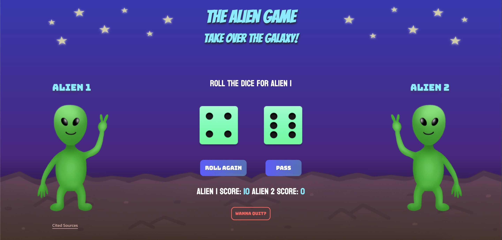

Project Summary
For my final project, I am choosing to update my Game On! Project with an emphasis on the visual design and a minor focus on the functionality.
For my final project, I am choosing to update my Game On! Project with an emphasis on the visual design and a minor focus on the functionality.
My Game On! Project is going to be an alien themed game with outer space elements. In terms of visuals, I hope to add more illustrations such as spaceships and planets in the background. I also want to create more alien characters that the user can choose from. The green dice will be substituted with different visuals such as laser beams or meteor bombs. Lastly, I would want to animate some of these elements and make an infinite loop for UFOs or creatures to move in and out of the backdrop repeatedly.
For functionality, there will be more added overlays to the interface. This includes an overlay for the user to choose their preferred alien character as well as another overlay to input the player names. I also might change the game story to suit a more alien-centric goal, such as abducting as many humans as possible or taking over planets. I also plan on making more elements interactive, such as animating buttons to toggle when hovered over. Overall, I want to try and troubleshoot my code to improve feedback for the audience for any required input fields and the winner announcement.
I intend to reach out to professors or TAs in design for feedback on my visuals. This includes professors like Lloyd Wheeler or James Housefield because they have more experience seeing different visual designs within their classes. I can contact them through email, Linkedin, or even meet with them during their office hours.